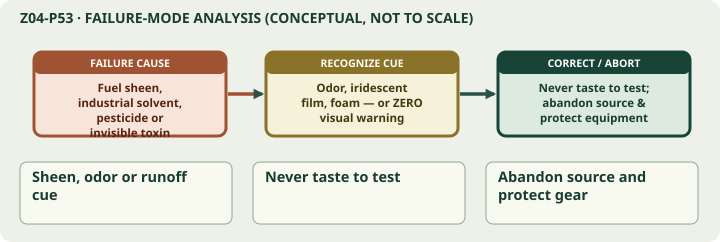

Z04-P53 · Water · New manuscript
Recognize chemical odor, sheen, industrial runoff and taste warnings
Identify sensory and environmental warning signs of toxic chemical contamination while recognizing that many chemicals are odorless.
When it applies · Screening surface water, flood-affected wells, damaged pipes and emergency storage containers before treatment.
Equipment · Local advisories, carried potable water and alternate supply contacts.

Actions
- Reject any water showing iridescent fuel sheen, chemical or solvent odor, soapy foam from industrial discharge, strange color or dead fish/wildlife nearby.[W01, W22, W15]
- Recognize the opposite trap: dangerous concentrations of lead, arsenic, nitrates, pesticides and many cyanotoxins have no smell, taste or color—never taste suspect water to test it.[W22, W23, W16]
- Keep suspected chemical-contaminated water off skin and away from cooking pots, filters and clean storage containers to avoid contaminating your equipment.[W01, W06, W18]
Failure recognition · Dipping a reusable filter into oily storm runoff to see if carbon removes the smell, ruining the cartridge and still risking toxic exposure.[W01, W21, W22]
Verify · Confirm zero sensory or landscape indicators of chemical release and verify no local Do Not Drink or Do Not Use notice applies.[W01, W07, W22, ED]
Stop or change course · Any suspected fuel, solvent, pesticide, heavy-metal or algal-toxin hazard requires immediate source abandonment and switching to an alternate safe supply.[W01, W15, W22]
Evidence and editorial notes
- W01 · CDC · How to Make Water Safe in an Emergency (2024-09-19)
- Section: Water with fuel or toxic chemicals in it · Conditions: Suspected fuel, toxic chemicals or radioactive contamination
Support: Use a different safe supply. Standard boiling and microbial disinfection do not make this water safe.
Limitations: Does not list contaminant-specific lab remediation; applies to emergency consumer decisions only. · Conflicting evidence: None across CDC/EPA emergency guidance.
Editorial note: Used as upstream hard-stop gate prior to any field treatment card. · Specialist reviewer: Drinking-water safety and public health
Primary source · checked 2026-11-24 - W06 · CDC · How to Create an Emergency Water Supply (current web edition)
- Section: How to store emergency water; Safe storage containers · Conditions: Potable water intended for emergency storage
Support: Prefer sealed commercial water or clean food-grade tight-closing containers. Avoid containers that held toxic chemicals.
Limitations: Container shelf durability and rotation depend on plastic/material type and storage heat. · Conflicting evidence: None; reinforces strict raw-vs-clean segregation.
Editorial note: Used to enforce labeling and dedicated raw/potable vessel separation. · Specialist reviewer: Drinking-water safety and public health
Primary source · checked 2026-11-24 - W07 · CDC · Drinking Water Advisories: An Overview (current web edition)
- Section: Boil water; Do not drink; Do not use · Conditions: Public-water system advisories
Support: The notice determines safe activities. Use another source for do-not-drink notices. Do not use tap water for any purpose under a do-not-use notice unless authorities direct otherwise.
Limitations: Local utility directives supersede general field summaries. · Conflicting evidence: None; exact advisory category is authoritative.
Editorial note: Distinguishes boil-water, do-not-drink, and do-not-use actions explicitly. · Specialist reviewer: Drinking-water utility and public health
Primary source · checked 2026-11-24 - W15 · US EPA · Learn About Harmful Algae, Cyanobacteria and Cyanotoxins (current web edition)
- Section: Cyanotoxins and water treatment · Conditions: Surface water with discolored scum, mats, foul odor, or active HAB advisory
Support: Do not use a suspect bloom as a drinking-water source. Routine field microbial treatment is not a validated method of removing cyanotoxins.
Limitations: Cyanotoxins can persist in visually clear water after a bloom dissipates. · Conflicting evidence: Contradicts naive boil-everything advice; CDC/EPA HAB warnings explicitly prohibit boiling HAB water.
Editorial note: Establishes HABs as a chemical-toxin rejection trigger, not a microbial boil target. · Specialist reviewer: Environmental health and drinking-water safety
Primary source · checked 2026-11-24 - W16 · U.S. EPA · Harmful Algal Blooms and Cyanotoxins FAQ (2016)
- Section: Can I boil my water to make it safe to drink? · Conditions: Suspected cyanotoxins or applicable do-not-drink water advisory
Support: Boiling does not remove cyanotoxins and can increase their concentration. Follow the advisory and use an approved alternate source.
Limitations: Do not infer treatment capability or absence of toxin from visual appearance. · Conflicting evidence: See A02 claim audit for boundaries.
Editorial note: Supports regional Upper Midwest lake/pond source screening in summer and autumn. · Specialist reviewer: Environmental health and public health
Primary source · checked 2026-11-25 - W18 · CDC · What to Do With Your Private Well After a Flood (current web edition)
- Section: How to Disinfect Wells After an Emergency > Safety precautions and before returning to use · Conditions: Private drinking water wells submerged or impacted by floodwater
Support: Do not drink flood-impacted well water; rely on bottled or verified safe water, watch for fuel/chemical spills, and use qualified well contractors for inspection, electrical safety, and disinfection.
Limitations: Well shock-chlorination is unsafe to improvise around damaged electrical equipment or chemical releases. · Conflicting evidence: None; aligns with EPA private-well guidance.
Editorial note: Prevents DIY well repair or consumption before testing confirms safety. · Specialist reviewer: Drinking-water utility and environmental health
Primary source · checked 2026-11-24 - W21 · CDC · Choosing Home Water Filters and Other Water Treatment Systems (current web edition)
- Section: Check filter label for which germs and chemicals it removes; filter types · Conditions: Exact point-of-use model and a known target
Support: Verify the named independently tested reduction claim for the model. A treatment type or general standard number does not establish reduction for a different contaminant.
Limitations: Compare the product label and actual conditions; follow the active water advisory. · Conflicting evidence: See A02 claim audit for boundaries.
Editorial note: Frames equipment selection around verified contaminant classes and certifications. · Specialist reviewer: Drinking-water treatment specialist
Primary source · checked 2026-11-24
Current assessment · A04-W21 (2026-11-25) · Bounded support newly confirmed (A04): Validate the product and contaminant by its actual tested claim. A label or certification category does not validate other contaminants. Limits: Specialist review PENDING (Drinking-water treatment specialist); publication HOLD. All release decisions pending. - W22 · US EPA · National Primary Drinking Water Regulations (current web edition)
- Section: National Primary Drinking Water Regulations · Conditions: Surface or groundwater near agriculture, industry, mines, roads, or old plumbing
Support: Regulated drinking-water hazards span inorganic chemicals (lead, arsenic, nitrate), organic solvents, pesticides, radionuclides, and microbes; microbial treatments do not remove dissolved inorganic or organic chemicals.
Limitations: Field observation cannot measure dissolved chemical concentration; laboratory testing is required. · Conflicting evidence: None; underpins strict chemical-rejection boundaries.
Editorial note: Explains why agricultural runoff, mine tailings, and road salt/fuel require source rejection. · Specialist reviewer: Environmental toxicology and drinking-water safety
Primary source · checked 2026-11-24 - W23 · Minnesota Dept. of Health · Drinking Water Contaminants (current web edition)
- Section: Drinking Water Contaminants · Conditions: Minnesota surface and groundwater sources
Support: Agricultural nitrates, industrial chemicals, road runoff, and naturally occurring minerals can affect local water independent of visual clarity or microbial load.
Limitations: Specific contaminant risk varies by county, aquifer, and watershed land use. · Conflicting evidence: None; regionalized extension of EPA-CONTAM.
Editorial note: Anchors Upper Midwest watershed and land-use source screening. · Specialist reviewer: Regional environmental health
Primary source · checked 2026-11-24
Source lineage · CDC and EPA chemical water hazards; new manuscript · Classification · New manuscript.